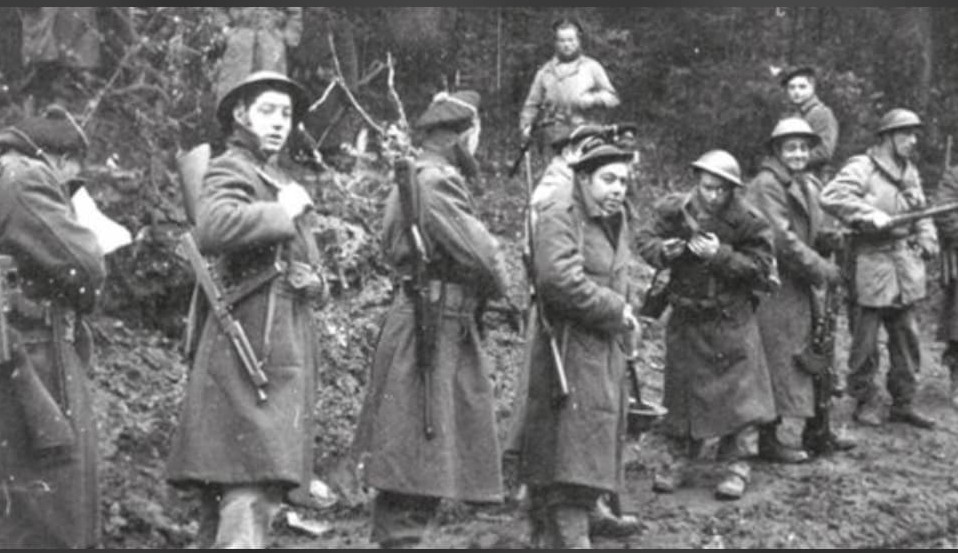
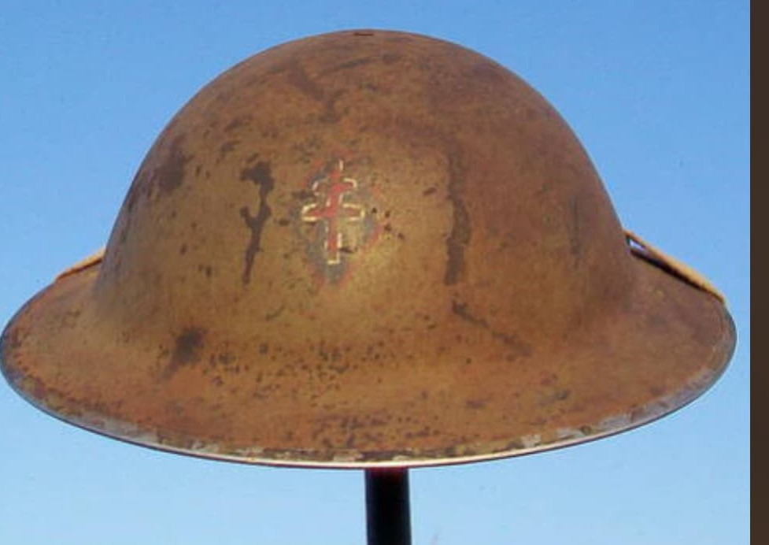
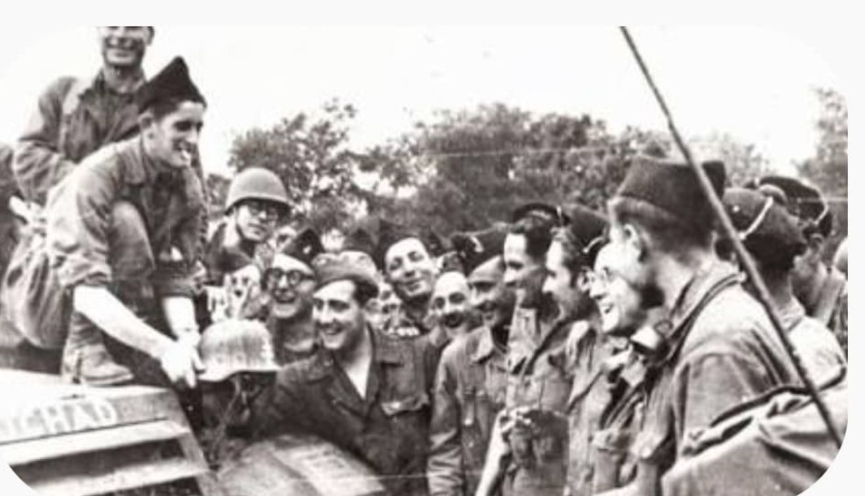

Des sables du désert africain aux âpres combats d'Alsace et des Alpes

Créée officiellement en mai 1943 en Afrique du Nord à partir des unités des Forces Françaises Libres (FFL) ayant combattu au Moyen-Orient et en Libye, la 2e Division Française Libre (2e DFL) — commandée par la suite par le général Edgar de Larminat puis par le général Pierre Garbay — fut l'une des grandes unités d'infanterie d'élite de la France combattante.
Forte d'un métissage exceptionnel de légionnaires, de tirailleurs, de marins, de spahis et de volontaires de métropole ou de l'Empire, la division s'est illustrée sur les théâtres d'opérations les plus difficiles de la Seconde Guerre mondiale.
La 2e DFL hérite directement des traditions des troupes de la France Libre engagées dès 1940-1941. Elle regroupe des formations aguerries telles que la 1re Brigade française libre du colonel Cazaaudus, des unités d'artillerie coloniale, des bataillons de marche et des éléments de la Marine.
Son insigne met en valeur l'esprit de la France Libre, unissant les symboles de la lutte armée au service de la patrie et de la croix de Lorraine.

Après avoir participé activement aux combats en Afrique du Nord et à la fin de la campagne de Tunisie, la division est réorganisée sur le modèle des grandes unités alliées.
Au printemps 1944, intégrée au Corps Expéditionnaire Français du maréchal Juin, la 2e DFL participe à la dure **campagne d'Italie**. Elle prend part aux combats acharnés de libération du territoire italien, franchissant les lignes fortifiées allemandes dans des reliefs montagneux escarpés.

La division débarque en Provence en août 1944 lors de l'**opération Dragoon**. Elle remonte rapidement la vallée du Rhône, participe à la libération de plusieurs villes françaises et intègre la 1re Armée française du général de Lattre de Tassigny.
Durant l'hiver glacial de 1944–1945, la 2e DFL joue un rôle primordial dans la réduction de la poche de Colmar et la défense des positions françaises en Alsace, avant de terminer la guerre par une campagne offensive dans les Alpes.
Unité d'élite caractérisée par un sens élevé du devoir et du sacrifice, la 2e Division Française Libre a payé un lourd tribut pour la reconquête de la souveraineté nationale, comptant des milliers de tués et de blessés dans ses rangs.
Plusieurs de ses régiments et unités constituantes ont été faits **Compagnon de la Libération**, perpétuant le souvenir de ces soldats de l'ombre et de la liberté.
Page du Musée HOP WW2 – Section Unités & Divisions Célèbres